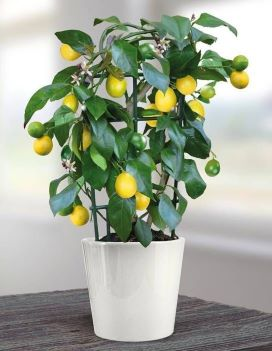

What better way to add a Mediterranean feel to a sunny patio, doorstep or balcony than with a citrus tree? There’s a wide range of tempting options to choose from, including lemons, limes and kumquats. They usually form compact plants, either small trees or shrubs, ideal for growing in containers. Some, such as lemons, are suitable for beginners, others can be more of a challenge.
